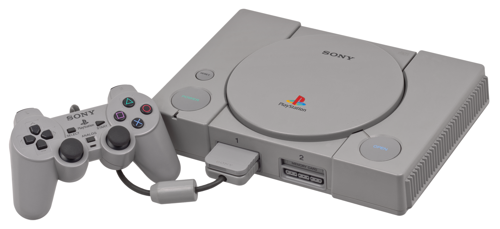
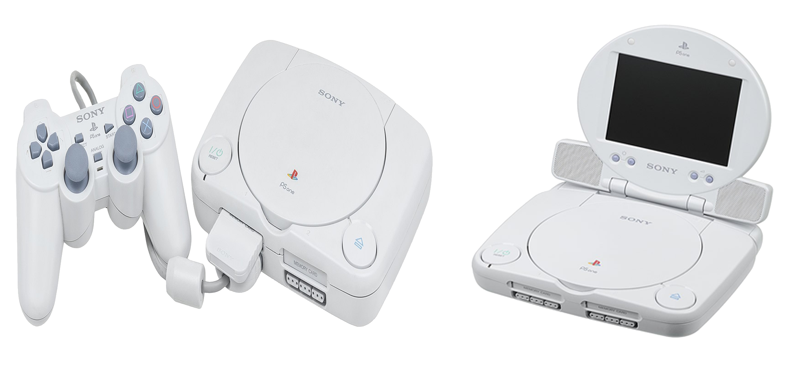
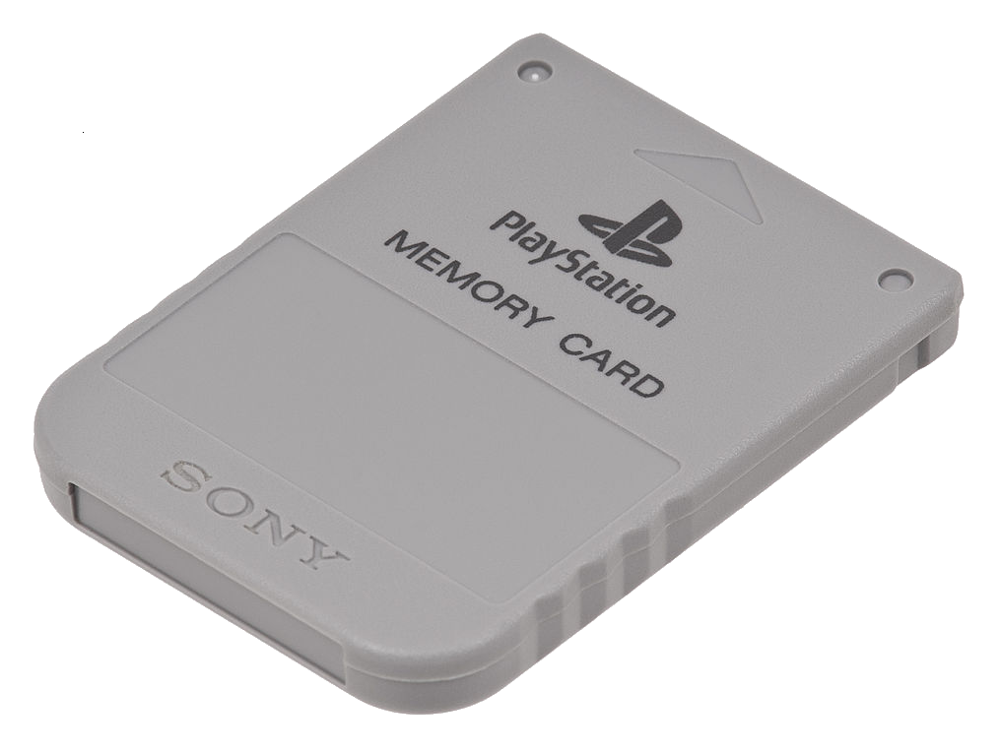
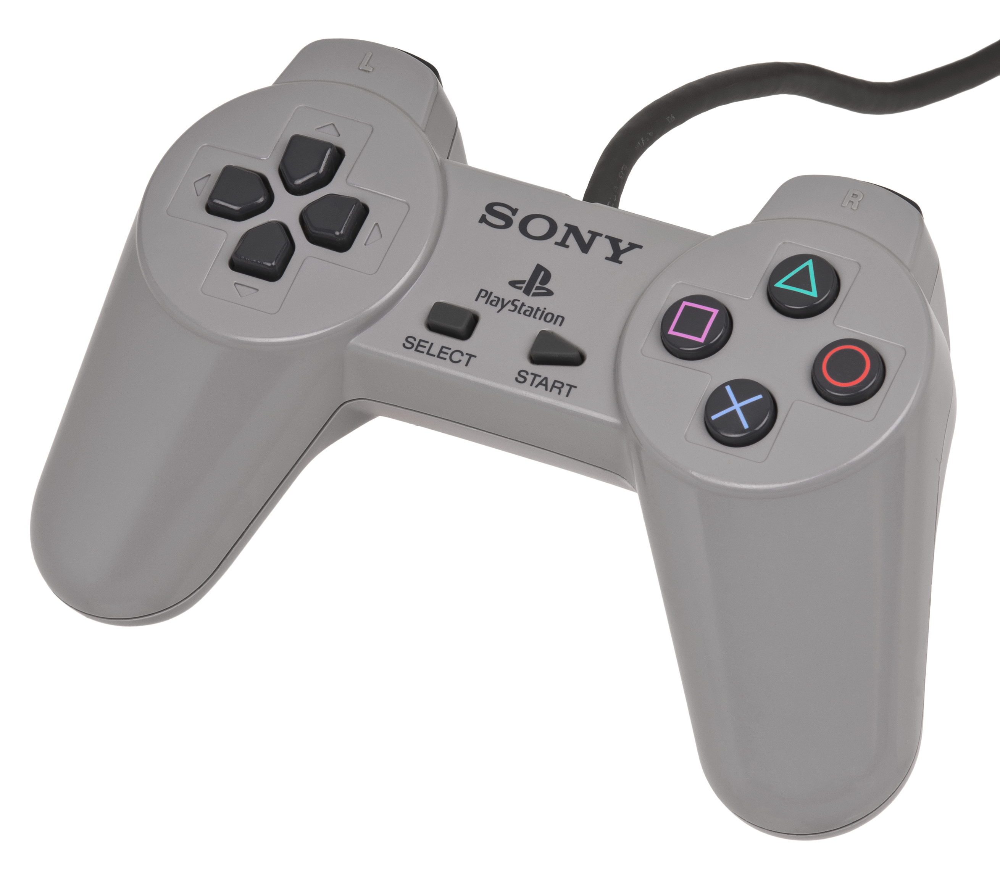
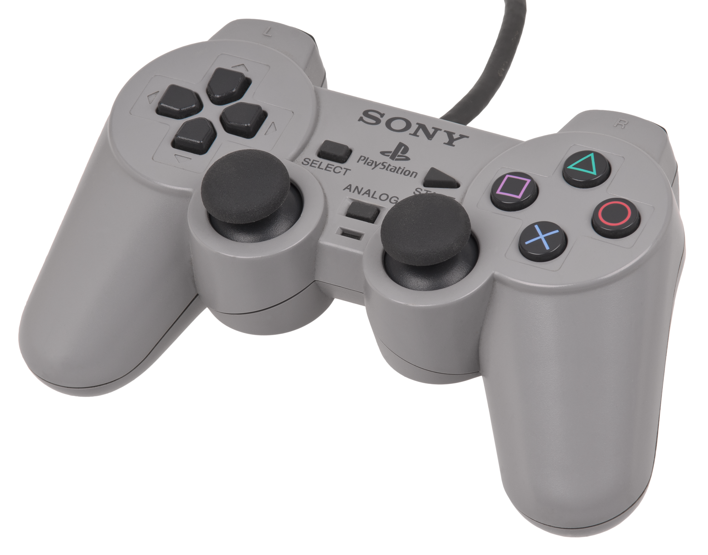

Playstation
 O início do que se tornou o PlayStation lançado, remonta a 1986 com uma joint venture (modelo estratégico de parceria comercial ou aliança entre empresas) entre a Nintendo e a Sony. A Nintendo já havia produzido a tecnologia de disquete para complementar os cartuchos, na forma do Family Computer Disk System, e queria continuar essa estratégia de armazenamento complementar para o Super Famicom. A Nintendo procurou a Sony para desenvolver um complemento de CD-ROM, provisoriamente intitulado "Play Station" ou "SNES-CD". Um contrato foi assinado e o trabalho começou. A escolha da Nintendo de alguém com quem eles haviam trabalhado antes, Ken Kutaragi, que mais tarde foi chamado de "O Pai do PlayStation", foi o indivíduo que vendeu a Nintendo usando o processador Sony SPC-700 para uso, como o som ADPCM de oito canais definido no console Super Famicom/SNES através de uma impressionante demonstração dos recursos do processador. A empresa de videogame, no entanto, rompeu com a Sony, uma neófita da indústria, porque considerou que perderia muito controle e benefícios derivados da venda de jogos em CD. Kutaragi quase foi demitido pela Sony porque ele estava originalmente trabalhando com a Nintendo sem o conhecimento da Sony (enquanto ainda estava empregado pela Sony). Foi então que o CEO Norio Ohga, que reconheceu o potencial do chip de Kutaragi e trabalhou com a Nintendo no projeto. Ohga manteve Kutaragi na Sony, e não foi até a Nintendo cancelar o projeto que a Sony decidiu desenvolver seu próprio console. A Sony também planejava desenvolver um console da marca Sony compatível com Super NES, mas que seria mais um sistema de entretenimento doméstico, reproduzindo cartuchos Super NES e um novo formato de CD que a Sony projetaria. Esse também deveria ser o formato usado nos SNES-CDs, dando um alto grau de controle à Sony, apesar da posição de liderança da Nintendo no mercado de videogames. A Sony lançou o PlayStation no Japão em 3 de dezembro de 1994. O sucesso foi imediato. A chave estava nas instalações oferecidas pela empresa aos desenvolvedores de videogames, empolgadas com as grandes possibilidades técnicas, as três dimensões e o disco. Os desenvolvedores assumiram vários riscos financeiros ao criar cartuchos para Sega ou Nintendo; pelo contrário, a Sony ofereceu todas as facilidades para ter um catálogo variado de jogos. Imediatamente os grandes nomes do setor se juntaram. Títulos como Gran Turismo, Metal Gear ou Final Fantasy são história fundamental dos videogames.

Em meados de 2000, o PlayStation foi redesenhado, ficando menor, com curvas arredondadas e mais leve, esse modelo recebeu o nome de PSOne, agora sendo produzido na cor branca, com suas vendas no ano 2000, sendo superiores ao seu sucessor, o PlayStation 2. Foi também lançada uma versão chamada de PS One Combo, que vinha com uma tela LCD de 5 polegadas. O PlayStation teve um total de 7918 títulos de software lançados no mundo todo; 4944 no Japão, 1639 na Europa e 1335 na América do Norte.
O título mais vendido do console é Gran Turismo, que vendeu 10,85 milhões de unidades. Após a descontinuação do console em 2006, a remessa acumulada de software foi cerca de 962 milhões de unidades. O console possui uma biblioteca de jogos diversificada que serviu para atrair todos os tipos de jogadores. Os jogos de lançamento foram Jumping Flash! e Ridge Racer, com o primeiro sendo anunciado como um ancestral para gráficos 3D em jogos de console. Os principais jogos do PlayStation incluíram títulos aclamados pela crítica, como Final Fantasy VII, Crash Bandicoot, Spyro The Dragon, Metal Gear Solid e Tekken, com todos os jogos gerando novas sequências posteriormente e tornando-se franquias estabelecidas no mercado de jogos eletrônicos. O título Final Fantasy VII foi importante por permitir que jogos de RPG ganhassem mais popularidade fora do Japão e é considerado um dos melhores jogos de videogame já feitos.Em meados de 2000, o PlayStation foi redesenhado, ficand menor, com curvas arredondadas e mais leve, esse modelo recebeu o nome de PSOne, agora sendo produzido na cor branca, com suas vendas no ano 2000, sendo superiores ao seu sucessor, o PlayStation 2. Foi também lançada uma versão chamada de PS One Combo, que vinha com uma tela LCD de 5 polegadas.
O título mais vendido do console é Gran Turismo, que vendeu 10,85 milhões de unidades. Após a descontinuação do console em 2006, a remessa acumulada de software foi cerca de 962 milhões de unidades. O console possui uma biblioteca de jogos diversificada que serviu para atrair todos os tipos de jogadores. Os jogos de lançamento foram Jumping Flash! e Ridge Racer, com o primeiro sendo anunciado como um ancestral para gráficos 3D em jogos de console. Os principais jogos do PlayStation incluíram títulos aclamados pela crítica, como Final Fantasy VII, Crash Bandicoot, Spyro The Dragon, Metal Gear Solid e Tekken, com todos os jogos gerando novas sequências posteriormente e tornando-se franquias estabelecidas no mercado de jogos eletrônicos. O título Final Fantasy VII foi importante por permitir que jogos de RPG ganhassem mais popularidade fora do Japão e é considerado um dos melhores jogos de videogame já feitos.Em meados de 2000, o PlayStation foi redesenhado, ficand menor, com curvas arredondadas e mais leve, esse modelo recebeu o nome de PSOne, agora sendo produzido na cor branca, com suas vendas no ano 2000, sendo superiores ao seu sucessor, o PlayStation 2. Foi também lançada uma versão chamada de PS One Combo, que vinha com uma tela LCD de 5 polegadas.

O PlayStation popularizou um acessório que, embora já existente em outros consoles (NEO-GEO, por exemplo), não havia ganhado vida plena: o Memory Card. O cartão de memória permitia salvar dados dos jogos e o progresso do usuário no jogo para continuar do ponto em que parou. Mesmo com a chegada de concorrentes mais poderosos como Nintendo 64, Sega Saturn e o Dreamcast, o PlayStation continuava sendo o console mais vendido e com uma extensa biblioteca de jogos de grande sucesso. O sucesso da marca Playstation havia se estabelecido.

O controle do PlayStation foi lançado em diferentes modelos ao longo da vida do console. A primeira versão possui quatro botões direcionais individuais (diferente do D-Pad convencional), um par de botões de ombro em ambos os lados (L1 e L2; R1 e R2), botões "Start" e "Select" no centro e quatro botões compostos por formas geométricas simples: um triângulo verde, círculo vermelho, um X azul e um quadrado rosa. O design foi completamente inovador e bastante ergonômico, graças às duas saliências inferiores para melhor empunhadura das mãos, veio a se tornar quase um molde para controles de plataformas futuras (de fato, para os PS seguintes o formato permaneceu inalterado enquanto que para a maioria das outras plataformas o desenho foi tomado como base).

Com a crescente popularidade de jogos em 3D, a Sony precisava implementar analógicos para que a experiência em ambientes 3D fosse melhorada. O primeiro controle com analógicos, o Dual Analog Controller, foi revelado ao público na PlayStation Expo de 1996 no Japão, e posteriormente lançado em abril de 1997, coincidindo com os lançamentos japoneses dos títulos Tobal 2 e Bushido Blade. Além das duas novas alavancas analógicas, o Dual Analog possui um botão chamado "Analog" abaixo dos botões "Start" e "Select" que ativam ou desativam a função analógica. Em 1997, após colocar o console na liderança, a Sony decidiu lançar um upgrade para o controle do aparelho: o DualShock, que introduziu duas alavancas analógicas e um sistema rumble, recurso que fazia o dispositivo vibrar nas mãos do jogador de acordo com o que acontecia nos jogos. Contudo, a partir do controle DualShock do PlayStation, a possibilidade de movimentos de intensidade variável - por exemplo, o esterçar de volante em um carro ou a própria intensidade de aceleração e frenagem em um jogo de corrida - foi possível em jogos rodados em TVs.